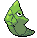

-
Bulbasaur #001

- Grama
- Veneno
Há uma semente de planta em suas costas desde o dia em que este Pokémon nasce. A semente cresce lentamente.
-
Ivysaur #002

- Grama
- Veneno
Quando o buldo em suas costas cresce, parece perder a capacidade de ficar de pé em suas patas traseiras.
-
Venusaur #003

- Grama
- Veneno
Sua planta florescee quando está absorvendo energia solar. Ele permanece em movimenti para buscar luz solar.
-
Charmander #004

- Fogo
Tem preferência por coisas quentes. Quando chove, diz-se que o vapor de vapor jorra da ponta de sua calda.
-
Charmeleon #005

- Fogo
Charmeleon é um Pokérmon reptiliano. Ele tem escamas vermelhas na sua parte inferior. Existe um chifre na parte de trás da cabeça.
-
Charizard #006

- Fogo
Seu fogo é quente o suficiente para derreter rochas. Quando nervoso, a chama em sua cauda queimará intensamente.
-
Squirtle #007

- Água
Squirtle é baseado em uma tartaruga marinha. Tem uma pele azul claro e usa um casco e junto também tem uma calda longa azul.
-
Wartotle #008

- Água
Sua cauda é grande e coberta com uma rica pelagem espessa. A cauda fica com uma coloração cada vez mais intensa com a idade do Wartortle.
-
Blastoise #009

- Água
Blastoise possui canos de água muito precisos que sobressaem de sua carapaça.
-
Caterpie #010

- Inseto
Sua característica mais notável é a brilhante antena vermelha em sua cabeça, a partir do qual ele libera um cheiro para repelir predadores.
-
Metapod #011
- Inseto
Metapod é baseado em um casulo. Ele tem uma forma de lua, sendo que sua expressão facial não muda durante as batalhas.
-
Butterfree #012

- inseto
Butterfree tem a forma de uma borboleta. Seu corpo é roxo, tem olhos vermelhos e duas antenas pretas, sua boca é preta com dois dentes para fora,